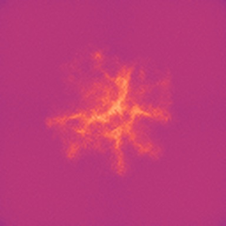

Research
I simulate a gas cloud 100 times denser than its surroundings struck by a Mach 2 wind, and run the same problem with twelve hydrodynamic methods at the same resolution levels. For the first 3 tcc the methods stay close; by 5 tcc the eight grid codes keep 10 to 28 percent of the dense gas at level 5 and the particle and moving mesh methods 37 to 98 percent. The setup, the runs and the measurements are below, and the full comparison is in the paper (PDF).
| Cloud | 100 times denser than the wind (χ 100), with a smooth edge |
|---|---|
| Wind | Mach 2 |
| Box | 20 × 10 × 10 cloud radii |
| Resolution | Levels 3, 4 and 5; three runs at level 6 |
| Saved states | 101 per run, up to 5 tcc |
| Codes | Athena++, AthenaPK, Athena 4.2, Enzo, Enzo-E, RAMSES, FLASH 4.8, Flash-X, Arepo, GIZMO MFM, GIZMO MFV, GADGET-4 |
Runs and levels
Every run of the comparison starts from the same cloud and the same wind. I run each method at levels 3, 4 and 5 and save 101 states, from the moment the wind reaches the cloud to 5 tcc. The methods differ in how they move the gas and in the faces of their box. Further runs at χ 10 and 1000, three at level 6 and runs with radiative cooling show how the result depends on the cloud and the physics.
The eight grid codes keep the gas in fixed cells; the wind flows in through one face of the box and out through the others. Arepo moves its cells with the gas, in a box periodic along the wind. The three particle methods carry the gas on particles, in a box periodic on all faces.
| Method | Kind | Box faces |
|---|---|---|
| Athena++ | grid code | inflow and outflow |
| AthenaPK | grid code | inflow and outflow |
| Athena 4.2 | grid code | inflow and outflow |
| Enzo | grid code | inflow and outflow |
| Enzo-E | grid code | inflow and outflow |
| RAMSES | grid code | inflow and outflow |
| FLASH 4.8 | grid code | inflow and outflow |
| Flash-X | grid code | inflow and outflow |
| Arepo | moving mesh | periodic along the wind |
| GIZMO MFM | particle method | periodic on all faces |
| GIZMO MFV | particle method | periodic on all faces |
| GADGET-4 | particle method | periodic on all faces |
| Level | Cells | Cells per cloud radius |
|---|---|---|
| 3 | 64 × 32 × 32 | 3.2 |
| 4 | 128 × 64 × 64 | 6.4 |
| 5 | 256 × 128 × 128 | 12.8 |
| 6 | 512 × 256 × 256 | 25.6 |
Boundary control
The box faces differ between the methods, so I repeat Athena++ in the two periodic boxes of the other methods, periodic along the wind and periodic on all faces, at levels 3, 4 and 5. These runs show what the faces alone change. I also run the same two boxes made 100 cloud radii long instead of 20.
Solver settings
Single changes to the numerical method of one code, each next to the standard run of that code at the same level: PPM instead of PLM reconstruction in Athena++, the HLLC solver in Enzo, and the PPM settings of Enzo in Enzo-E.
Smooth velocity profile
The runs of the comparison start with zero velocity inside 1.3 cloud radii and the full wind velocity outside. Runs started with the earlier smooth velocity profile at the cloud edge are kept next to their sharp edge runs.
Density contrast 10 and 1000
Clouds 10 and 1000 times denser than the wind, otherwise the setup of the twelve methods, run with Athena++, Enzo and Enzo-E at level 5 and with Athena++ and AthenaPK at levels 3 and 4.
AthenaPK cooling and solver tests
AthenaPK with tabulated radiative cooling switched on and off, and with the HLLE and HLLC Riemann solvers and PLM and PPM reconstruction.
Level 6
Three runs on the level 6 grid of 512 × 256 × 256 cells: Athena++ at χ 10, and AthenaPK at χ 100 with the sharp velocity edge and with the smooth velocity profile.
Every complete run is listed on the Runs page with its films, its 3D view and its pictures on the Compare page.
Names and units
- Code
- The simulation code and its method, written as the code calls itself, for example Athena++ or GADGET-4. It comes first in every run name.
- Level
- The resolution. Level 5 is 256 × 128 × 128 cells, 12.8 cells across the cloud radius. Each level doubles the cells in every direction.
- χ
- The density contrast between cloud and wind. χ 100 means the cloud starts 100 times denser than the wind.
- tcc
- The cloud crushing time, tcc = √χ R / vwind, the time the shock needs to cross the cloud. Every frame prints its time, for example t = 1.25 tcc.
- Dense mass
- The mass of gas denser than one third of the starting cloud density, as a fraction of its starting value. It shows how much of the cloud is still dense.
Column density maps
Each picture shows the column density of all gas, the density added up along the line of sight. Edge on looks across the wind, which blows from left to right. Face on looks along the wind, straight at the cloud. Every run uses one logarithmic colour scale, so a colour means the same column in every picture and every film.
 GIZMO MFM, χ 100, level 5, edge on, t = 5.00 tcc
GIZMO MFM, χ 100, level 5, edge on, t = 5.00 tcc Face on, t = 5.00 tcc
Face on, t = 5.00 tcc GIZMO MFV, χ 100, level 5, edge on, t = 5.00 tcc
GIZMO MFV, χ 100, level 5, edge on, t = 5.00 tcc
Face on, t = 5.00 tcc3D density surfaces
The 3D viewer draws two density surfaces for every saved state. A translucent blue surface wraps all gas denser than 0.15 of the starting cloud density and shows the whole cloud with its tail. A solid orange surface wraps gas denser than 0.6 of it and shows the dense core.
The viewer turns the cloud, plays it through time, sets two runs side by side at the same time and saves pictures or films; every frame prints its time. 3D viewer
Results so far
For the first 3 tcc the methods stay close: at level 5, eleven of the twelve keep between 67 and 79 percent of the dense gas.
By 5 tcc they separate. The eight grid codes keep between 10 and 28 percent, GIZMO MFV 37 percent, Arepo 54 percent, GADGET-4 76 percent and GIZMO MFM 98 percent.
The box faces matter late in the run. Running Athena++ in the periodic boxes of the other methods changes nothing for the first 2 tcc and raises its final dense fraction from 0.10 to 0.27 when the box is periodic along the wind, and to 0.33 when it is periodic on all faces. In the same two boxes made 100 cloud radii long this extra dense gas is gone: the box periodic along the wind gives the history of the open box, and the box periodic on all faces ends within 0.01 of it.
AthenaPK and Athena++ use the same scheme and give the same history.
| Method | Dense gas left |
|---|---|
| Eight grid codes | 10 to 28 % |
| GIZMO MFV | 37 % |
| Arepo | 54 % |
| GADGET-4 | 76 % |
| GIZMO MFM | 98 % |
| Box faces | Final dense fraction |
|---|---|
| Inflow and outflow | 0.10 |
| Periodic along the wind | 0.27 |
| Periodic on all faces | 0.33 |
About the data
What is published
The site carries pictures, films and 3D surfaces made from every saved state of each run. The raw simulation snapshots are kept offline because of their size; the paper and the downloads below hold the measured histories.
Smooth films
On the Runs and Compare pages the default version of every film plays at 60 frames per second. Between two saved states the picture cross fades, so the motion is smooth; the original versions and the films of the archive page keep the rate they were made at. Every frame prints its time, and a paused view or a saved picture shows a saved state.
One grid for display
Arepo, GIZMO MFM, GIZMO MFV and GADGET-4 do not use fixed cells. For the pictures and the 3D surfaces I place their gas on the same grid as the other codes, so every run is shown the same way.
Earlier runs
Runs from before the paper setup, with other contrasts, two dimensional runs and earlier films, are kept in the archive.
Downloads
| File | Type | Contents |
|---|---|---|
| Cloud_survival_OJA.pdf | PDF document | The paper: Cloud survival in supersonic winds |
| Cloud_survival_OJA_Overleaf.zip | ZIP archive | Paper source for Overleaf, with figures and data |
| studio-catalog.json | JSON data | Library catalog |
| catalog.json | JSON data | Projections of the complete runs with their dense mass histories |
| research-evidence-2026-09-09-current.zip | ZIP archive | Analysis bundle of the velocity setup study, September 2026 |
| research-files.csv | CSV table | Analysis files with SHA-256 checksums |
| streaming-inventory.csv | CSV table | Frame list of the earlier 3D runs |
| code | Folder on GitHub | Setup files and problem sources |
Browse the analysis files
| File | Type | Size |
|---|---|---|
| Download the list as CSV | ||